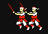
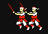

Here are some chages I had in mind for the latest version of the game!
- Game sounds : For effects such as battles, end of turn, leader conquers all, etc.
- I want the Price per Man to change only once each turn (before country 1 moves)
and update (and gradually rise) each turn (game year).
- If an A.I. nation has no hostile territories nearby to attack he will fortifty all
but 26 of his troops into a friendly ajoining nation.
- If defender's economy+gold is not at least 50% of attacker's (economy+gold) then
the attackers likelihood of attack drops 15%
- If defender's economy+gold is twice as high (or more) as the attacker's then
the attackers chance of attack rises by 15%
- Add icons for when leaders build into economy or hire or train men or move
them to an adjacent territory :
 


- Add Human Player! Once all the other changes are complete let me know and then
we can start to work on the new layout, located at
http://www.narcity.com/0WorkingCode/00NewInterface.html
- One more problem I just noticed. At the end of the turn (after country 12
has moved) the map goes blank (all the player icons disappear), this is probably an
easy problem to fix (just a matter of refreshing the map again, right?)